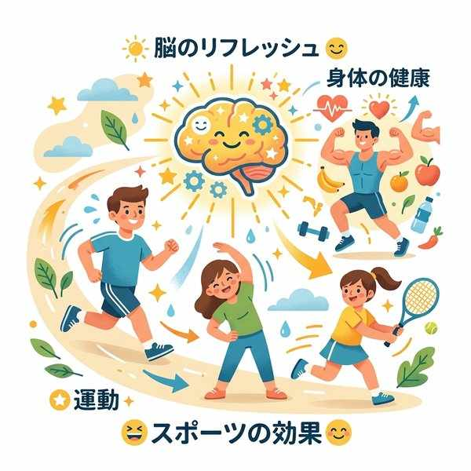
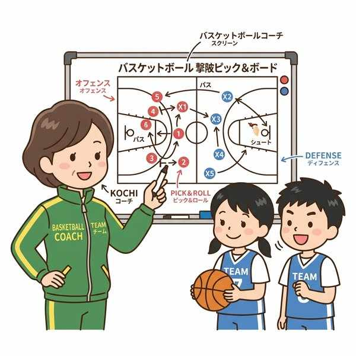
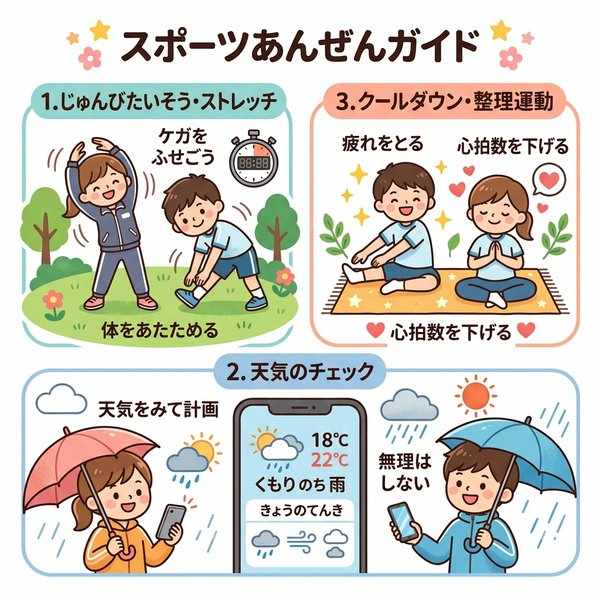

単元8: スポーツの技術・戦術と安全管理・体力の関係
スポーツをより高いレベルで、かつ安全に楽しむためには、ルールやマナーへの理解、合理的な体の動かし方である「技術・戦術」、そして体調や環境に応じた安全管理が欠かせません。テストによく出るキーワードや定義の違いをしっかり整理しましょう！
1. 体力と運動・スポーツの効果

行動体力と防衛体力の構成要素
スポーツは、適切な食事と組み合わせることで生活習慣病の予防に役立ち、精神的なストレスを解消する効果があります。体力は以下の2つに大別されます。
- 体力の2つの側面：
- 健康に生活するための体力（防衛体力）：病気への抵抗力や環境への適応力など。
- 運動を行うための体力（行動体力）：筋力、持久力、瞬発力、調整力など。
- 巧みさ（調整力）と神経系：体を自分の思い通りにコントロールする「巧みな動き（巧みさ）」に最も関係が深いのは、筋肉そのものよりも脳や神経（神経系）です。
2. 技術・戦術・作戦の違い

練習による身体と技術の向上
ペーパーテストの穴埋め・説明記述で非常に出題されやすいのが、これら3つの言葉の定義の違いです。
| 用語 | 言葉の定義 | 具体的な例 |
|---|---|---|
| 技術 （ぎじゅつ） |
それぞれのスポーツの目的にかなった、合理的な体の動かし方。 | バスケットボールのシュートフォーム、サッカーのインサイドキックなど。 |
| 戦術 （せんじゅつ） |
個人やチームが技術を選択・応用し、競い合いを有利に運ぶためのプレイの方法。 | マンツーマンディフェンス、速攻、ダブルチームなど。 |
| 作戦 （さくせん） |
対戦相手の強さや特徴、その日の天候などの条件に応じて決める、試合全体の進め方や方針。 | 「前半は守備を固めて後半に勝負する」「相手のエースをマークする」などの方針。 |
3. ルールとマナー、スポーツマンシップ

スポーツにおける安全の確保とルール
- ルール：スポーツの楽しさ、公平性、そして安全性を保障し、全員が共通の条件で競い合えるように定められたきまり（規則）。
- マナー：ルールには書かれていなくても、お互いが相手を気遣うために求められる礼儀や態度。
- フェアプレイ：ルールやマナーを守り、相手を尊重して全力を尽くした素晴らしいプレイをすること。
- スポーツマンシップ：人に配慮し、対戦相手を尊重し、全力を尽くすという、スポーツにおけるすべての望ましい態度や考え方の総称。
4. 安全にスポーツを行うための計画と管理
スポーツ中の怪我や事故を防ぐために、その日の体調や天候を考慮し、適切な「目的」「内容」、そして運動の方法や強度（強さ）を正しく計画します。
① 準備運動と整理運動
- 準備運動（ウォーミングアップ）：スポーツ活動の前に、体を温め、怪我を防止し、パフォーマンスを高めるために行う運動。
- 整理運動（クールダウン）：スポーツ活動の後に、疲労回復を早め、急激な心拍数の変化による体調不良を防ぐために行う運動。
② 野外スポーツの安全管理
ハイキング、登山、カヌー、スキーなどの野外（自然のなか）で活動するスポーツでは、自然に関する知識を身につけておくことが最重要です。
- 山の特徴：山の天候は非常に変わりやすいため、事前の入念な気象チェックが必要です。
- 川・海の特徴：川では急な増水に備えてライフジャケットを着用し、海では潮の満ち引きや強い引き波（離岸流）に注意します。
🔥 定期テスト対策・暗記のコツ
① 技術・戦術・作戦の定義分け
「合理的な体の動かし方 ➔ 技術」、「それを応用した有利なプレイ方法 ➔ 戦術」、「相手や状況に合わせた全体方針 ➔ 作戦」。この3つの用語の穴埋めは記述テストの超定番です。
② 「巧みさ」は「脳や神経」が支配する
体力の要素のうち、体を思い通りに素早く・器用に動かす「巧みな動き（調整力）」を司るのは「脳や神経」です。「筋肉」や「呼吸器」といった選択肢の引っ掛けに騙されないようにしましょう。
③ ルールとマナーの違い
「明文化された共通の条件 ➔ ルール」、「明文化されていなくても相手を気遣う態度 ➔ マナー」です。この本質的な違いも記述問題でよく狙われます。